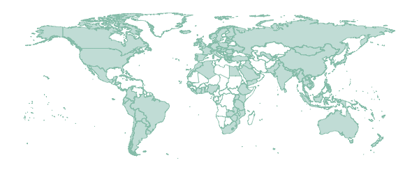

 Used in more than 120 countries
Since its first public release in early 2018, this package has been downloaded from more than 120 countries. Click the map to enlarge and to also see the names of the countries.
July 2020
PLEASE TAKE PART IN OUR SURVEY!
Since you are one of our users, we would like to know how you use the package and what it brought you or your organisation. If you have a minute, please anonymously fill in this short questionnaire. Your valuable input will help to improve the package and its functionalities. You can answer the open questions in either English, Spanish, French, Dutch, or German. Thank you very much in advance!
Take me to the 5-min survey!
What is AMR (for R)?
(To find out how to conduct AMR analysis, please continue reading here to get started.)
AMR is a free, open-source and independent R package to simplify the analysis and prediction of Antimicrobial Resistance (AMR) and to work with microbial and antimicrobial data and properties, by using evidence-based methods. Our aim is to provide a standard for clean and reproducible antimicrobial resistance data analysis, that can therefore empower epidemiological analyses to continuously enable surveillance and treatment evaluation in any setting.
After installing this package, R knows ~70,000 distinct microbial species and all ~550 antibiotic, antimycotic and antiviral drugs by name and code (including ATC, EARS-NET, LOINC and SNOMED CT), and knows all about valid R/SI and MIC values. It supports any data format, including WHONET/EARS-Net data.
This package is fully independent of any other R package and works on Windows, macOS and Linux with all versions of R since R-3.0.0 (April 2013). It was designed to work in any setting, including those with very limited resources. It was created for both routine data analysis and academic research at the Faculty of Medical Sciences of the University of Groningen, in collaboration with non-profit organisations Certe Medical Diagnostics and Advice and University Medical Center Groningen. This R package is actively maintained and is free software (see Copyright).
What can you do with this package?
This package can be used for:
- Reference for the taxonomy of microorganisms, since the package contains all microbial (sub)species from the Catalogue of Life and List of Prokaryotic names with Standing in Nomenclature (manual)
- Interpreting raw MIC and disk diffusion values, based on the latest CLSI or EUCAST guidelines (manual)
- Retrieving antimicrobial drug names, doses and forms of administration from clinical health care records (manual)
- Determining first isolates to be used for AMR analysis (manual)
- Calculating antimicrobial resistance (tutorial)
- Determining multi-drug resistance (MDR) / multi-drug resistant organisms (MDRO) (tutorial)
- Calculating (empirical) susceptibility of both mono therapy and combination therapies (tutorial)
- Predicting future antimicrobial resistance using regression models (tutorial)
- Getting properties for any microorganism (like Gram stain, species, genus or family) (manual)
- Getting properties for any antibiotic (like name, code of EARS-Net/ATC/LOINC/PubChem, defined daily dose or trade name) (manual)
- Plotting antimicrobial resistance (tutorial)
- Applying EUCAST expert rules (manual)
- Getting SNOMED codes of a microorganism, or getting properties of a microorganism based on a SNOMED code (manual)
- Getting LOINC codes of an antibiotic, or getting properties of an antibiotic based on a LOINC code (manual)
- Machine reading the EUCAST and CLSI guidelines from 2011-2020 to translate MIC values and disk diffusion diameters to R/SI (link)
- Principal component analysis for AMR (tutorial)
Get this package
Latest released version
This package is available here on the official R network (CRAN), which has a peer-reviewed submission process. Install this package in R from CRAN by using the command:
install.packages("AMR")
It will be downloaded and installed automatically. For RStudio, click on the menu Tools > Install Packages… and then type in “AMR” and press Install.
Note: Not all functions on this website may be available in this latest release. To use all functions and data sets mentioned on this website, install the latest development version.
Latest development version
The latest and unpublished development version can be installed from GitHub using:
install.packages("remotes") remotes::install_github("msberends/AMR")
Get started
To find out how to conduct AMR analysis, please continue reading here to get started or click the links in the ‘How to’ menu.
Short introduction
Microbial (taxonomic) reference data
This package contains the complete taxonomic tree of almost all ~70,000 microorganisms from the authoritative and comprehensive Catalogue of Life (CoL, www.catalogueoflife.org), supplemented by data from the List of Prokaryotic names with Standing in Nomenclature (LPSN, lpsn.dsmz.de). This supplementation is needed until the CoL+ project is finished, which we await. With catalogue_of_life_version() can be checked which version of the CoL is included in this package.
Read more about which data from the Catalogue of Life in our manual.
Antimicrobial reference data
This package contains all ~550 antibiotic, antimycotic and antiviral drugs and their Anatomical Therapeutic Chemical (ATC) codes, ATC groups and Defined Daily Dose (DDD, oral and IV) from the World Health Organization Collaborating Centre for Drug Statistics Methodology (WHOCC, https://www.whocc.no) and the Pharmaceuticals Community Register of the European Commission.
NOTE: The WHOCC copyright does not allow use for commercial purposes, unlike any other info from this package. See https://www.whocc.no/copyright_disclaimer/.
Read more about the data from WHOCC in our manual.
WHONET / EARS-Net
We support WHONET and EARS-Net data. Exported files from WHONET can be imported into R and can be analysed easily using this package. For education purposes, we created an example data set WHONET with the exact same structure as a WHONET export file. Furthermore, this package also contains a data set antibiotics with all EARS-Net antibiotic abbreviations, and knows almost all WHONET abbreviations for microorganisms. When using WHONET data as input for analysis, all input parameters will be set automatically.
Read our tutorial about how to work with WHONET data here.
Overview of functions
The AMR package basically does four important things:
-
It cleanses existing data by providing new classes for microoganisms, antibiotics and antimicrobial results (both S/I/R and MIC). By installing this package, you teach R everything about microbiology that is needed for analysis. These functions all use intelligent rules to guess results that you would expect:
- Use
as.mo()to get a microbial ID. The IDs are human readable for the trained eye - the ID of Klebsiella pneumoniae is “B_KLBSL_PNMN” (B stands for Bacteria) and the ID of S. aureus is “B_STPHY_AURS”. The function takes almost any text as input that looks like the name or code of a microorganism like “E. coli”, “esco” or “esccol” and tries to find expected results using intelligent rules combined with the included Catalogue of Life data set. It only takes milliseconds to find results, please see our benchmarks. Moreover, it can group Staphylococci into coagulase negative and positive (CoNS and CoPS, see source) and can categorise Streptococci into Lancefield groups (like beta-haemolytic Streptococcus Group B, source). - Use
as.ab()to get an antibiotic ID. Like microbial IDs, these IDs are also human readable based on those used by EARS-Net. For example, the ID of amoxicillin isAMXand the ID of gentamicin isGEN. Theas.ab()function also uses intelligent rules to find results like accepting misspelling, trade names and abbrevations used in many laboratory systems. For instance, the values “Furabid”, “Furadantin”, “nitro” all return the ID of Nitrofurantoine. To accomplish this, the package contains a database with most LIS codes, official names, trade names, ATC codes, defined daily doses (DDD) and drug categories of antibiotics. - Use
as.rsi()to get antibiotic interpretations based on raw MIC values (in mg/L) or disk diffusion values (in mm), or transform existing values to valid antimicrobial results. It produces just S, I or R based on your input and warns about invalid values. Even values like “<=0.002; S” (combined MIC/RSI) will result in “S”. - Use
as.mic()to cleanse your MIC values. It produces a so-called factor (called ordinal in SPSS) with valid MIC values as levels. A value like “<=0.002; S” (combined MIC/RSI) will result in “<=0.002”.
- Use
-
It enhances existing data and adds new data from data sets included in this package.
- Use
eucast_rules()to apply EUCAST expert rules to isolates (not the translation from MIC to R/SI values, useas.rsi()for that). - Use
first_isolate()to identify the first isolates of every patient using guidelines from the CLSI (Clinical and Laboratory Standards Institute).- You can also identify first weighted isolates of every patient, an adjusted version of the CLSI guideline. This takes into account key antibiotics of every strain and compares them.
- Use
mdro()to determine which micro-organisms are multi-drug resistant organisms (MDRO). It supports a variety of international guidelines, such as the MDR-paper by Magiorakos et al. (2012, PMID 21793988), the exceptional phenotype definitions of EUCAST and the WHO guideline on multi-drug resistant TB. It also supports the national guidelines of the Netherlands and Germany. - The data set microorganisms contains the complete taxonomic tree of ~70,000 microorganisms. Furthermore, some colloquial names and all Gram stains are available, which enables resistance analysis of e.g. different antibiotics per Gram stain. The package also contains functions to look up values in this data set like
mo_genus(),mo_family(),mo_gramstain()or evenmo_phylum(). Usemo_snomed()to look up any SNOMED CT code associated with a microorganism. As all these function useas.mo()internally, they also use the same intelligent rules for determination. For example,mo_genus("MRSA")andmo_genus("S. aureus")will both return"Staphylococcus". They also come with support for German, Dutch, Spanish, Italian, French and Portuguese. These functions can be used to add new variables to your data. - The data set antibiotics contains ~450 antimicrobial drugs with their EARS-Net code, ATC code, PubChem compound ID, LOINC code, official name, common LIS codes and DDDs of both oral and parenteral administration. It also contains all (thousands of) trade names found in PubChem. Use functions like
ab_name(),ab_group(),ab_atc(),ab_loinc()andab_tradenames()to look up values. Theab_*functions useas.ab()internally so they support the same intelligent rules to guess the most probable result. For example,ab_name("Fluclox"),ab_name("Floxapen")andab_name("J01CF05")will all return"Flucloxacillin". These functions can again be used to add new variables to your data.
- Use
-
It analyses the data with convenient functions that use well-known methods.
- Calculate the microbial susceptibility or resistance (and even co-resistance) with the
susceptibility()andresistance()functions, or be even more specific with theproportion_R(),proportion_IR(),proportion_I(),proportion_SI()andproportion_S()functions. Similarly, the number of isolates can be determined with thecount_resistant(),count_susceptible()andcount_all()functions. All these functions can be used with thedplyrpackage (e.g. in conjunction withsummarise()) - Plot AMR results with
geom_rsi(), a function made for theggplot2package - Predict antimicrobial resistance for the nextcoming years using logistic regression models with the
resistance_predict()function
- Calculate the microbial susceptibility or resistance (and even co-resistance) with the
-
It teaches the user how to use all the above actions.
- Aside from this website with many tutorials, the package itself contains extensive help pages with many examples for all functions.
- The package also contains example data sets:
- The
example_isolatesdata set. This data set contains 2,000 microbial isolates with their full antibiograms. It reflects reality and can be used to practice AMR analysis. - The
WHONETdata set. This data set only contains fake data, but with the exact same structure as files exported by WHONET. Read more about WHONET on its tutorial page.
- The
Copyright
This R package is free, open-source software and licensed under the GNU General Public License v2.0 (GPL-2). In a nutshell, this means that this package:
May be used for commercial purposes
May be used for private purposes
May not be used for patent purposes
-
May be modified, although:
- Modifications must be released under the same license when distributing the package
- Changes made to the code must be documented
-
May be distributed, although:
- Source code must be made available when the package is distributed
- A copy of the license and copyright notice must be included with the package.
Comes with a LIMITATION of liability
Comes with NO warranty